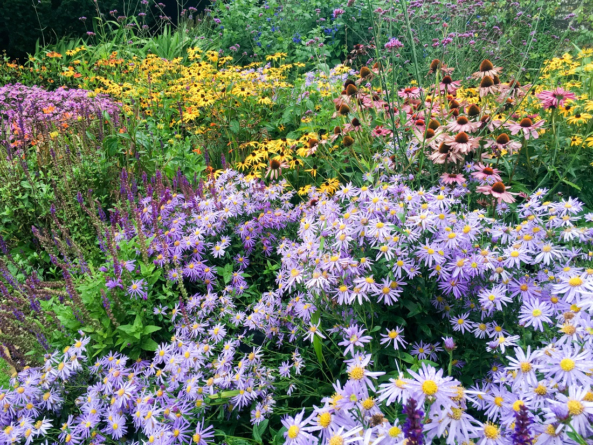
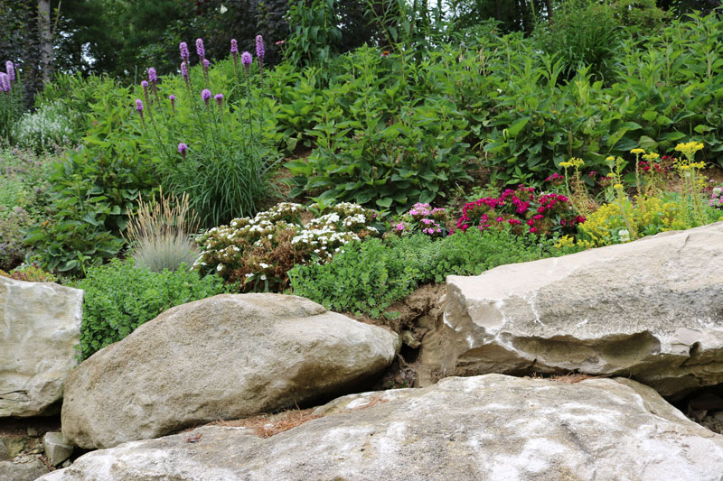
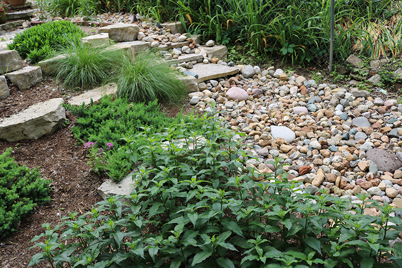
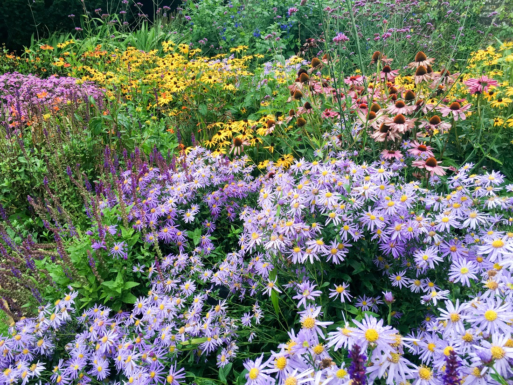
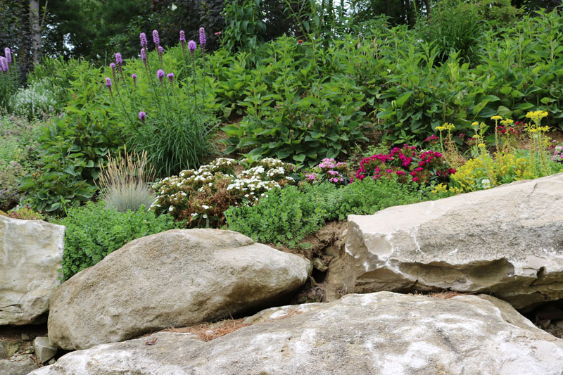
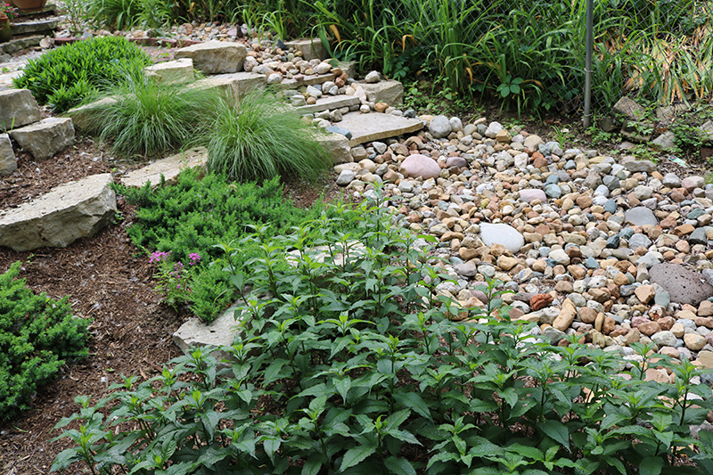

Benefits of Native Plants
What are native plants?
As the name suggests, native plants are native to a specific region. This means they occur naturally in that particular region and have not been introduced by humans. Native plants evolved in the native region, so they are adapted to the local climate, soil, and wildlife. In turn, the local wildlife have also adapted to the native plants, and many rely on them for resources.What are the benefits?
Native plants offer many benefits both to gardeners and the local wildlife.- Low Maintenance - Native plants require less maintenance than exotic plants because they are adapted to the local environment. Native plants are used to the amount of rainfall, the temperature ranges, and the amount of sunlight. They can get maximum benefits from the soil because they evolved in that soil. They can ward of pests like bugs, small animals, and even deer because they coevolved with those pests. Whereas exotic plants require the gardener to mimic their natural environment by watering them, fertilizing them, and using pesticides, native plants require lower levels of care [1]. Native plants will also generally live much longer because they do not require as much care. Additionally, if you have exotic plants in your garden, you can plant native plants with them to keep pests away, attract pollinators, and improve soil health [3]. For example, native flowers can make great companion plants for vegetable gardens. The native flowers can improve the soil for the vegetable plants and deter pests.
- Provide for Local Wildlife - The native wildlife coevolved with native plants, meaning they are used to relying on native wildlife for resources and have evolved to maximize those benefits [4]. For example, native pollinators and nectar-drinkers get maximum benefits from native flowers. Native insects and small animals can find shelter in native plants like prairie grasses. Native birds are adapted to native seeds, meaning their beaks can open the seeds and their bodies can use those nutrients efficiently. Additionally, the native plants have evolved with that wildlife, so they are able to provide without being harmed too bad in the process whereas exotic plants may be irreparably damaged when the wildlife tries to eat or use it.
-
Beauty and sense of place -
There are so many beautiful native species. Below are some gardens created by Quiet Village Landscaping in St. Louis to help give an idea of what native plants can look like when planted together in a garden.
 
 Native plants can also give a region a “sense of place,” which is a familiarity and connection with nature in a specific region [1]. Frequently exposing oneself to the native plants species in a region helps to connect and feel a sense of belonging in that area, just how one’s hometown may have a unique kind of food.

 Native plants can also give a region a “sense of place,” which is a familiarity and connection with nature in a specific region [1]. Frequently exposing oneself to the native plants species in a region helps to connect and feel a sense of belonging in that area, just how one’s hometown may have a unique kind of food.
What are exotic and invasive plants?
Exotic species are not as good as native plants, and it is best to approach them with caution. It is important to avoid planting invasive species.- Exotic Plants - As the name suggests, exotic plants are not native to a region. More specifically, “exotic species are those that do not naturally occur in our region, but have been introduced by humans, either intentionally or accidentally, allowing the species to cross a natural barrier to dispersal” [5]. Exotic plants are not used to the local environment. This means they usually do not do as well as native plants. They are not adapted to the local soil or pests, so they may require fertilizers and pesticides. They are not used to the local climate, meaning they may need extra watering and may even die if not often tended to. Additionally, the local wildlife did not coevolve with exotic species, so they are not good at using the resources they can provide. For example, the berries produced by exotic species are often less nutritious for the native birds because their bodies are not adapted to eating them, making them less likely to get the maximum nutrients from them. Native berries are much better for the native birds.
- Invasive Plants - A small number of those exotic plants are invasive, meaning they are detrimental to the local environment, the economy, or human health [5]. For example, invasive species may spread quickly and may encroach on farmland, killing crops and affecting our economy. They may also compete with native wildlife, taking precious resources from them. Typically, we cannot tell if an exotic plant will be invasive before it is too late [5]. Exotic plants are only classified as invasive if they are harmful, which we can usually only see the harmful effects once a plant is already widespread. For that reason, it is generally good to avoid exotic species in general, especially ones that we do not know the long-term effects of. It is especially important to do your research when using an exotic plant to be sure you do not accidentally introduce an invasive species.
Conclusion
Native plants can offer many benefits to the gardener and the environment. There are many types of native plants, so they can be used in any kind garden. While they may not actively harm the environment, it is best to avoid exotic species because they cannot provide as much for the wildlife and will require much more care. If you must use exotic species in a garden, you can still include some native species with them to improve the health of your exotic species. When using exotic species, it is important to do you research to ensure that you do not accidentally plant an invasive species.Sources
1. The Missouri Botanical Garden; A Gardener's Guide for Missouri
2. United States Department of Agriculture
3. Grow Native
4. Missouri Department of Conservation; Episode 26: Plant Natives For Spring Transcript
5. Missouri Botanical Garden; Invasive Plant Information
Image Sources
First Native Garden Picture
Second Native Garden Picture
Third Native Garden Picture
Fourth Native Garden Picture